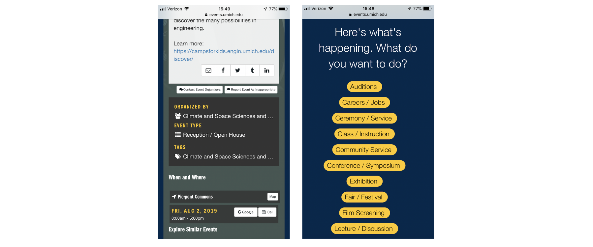
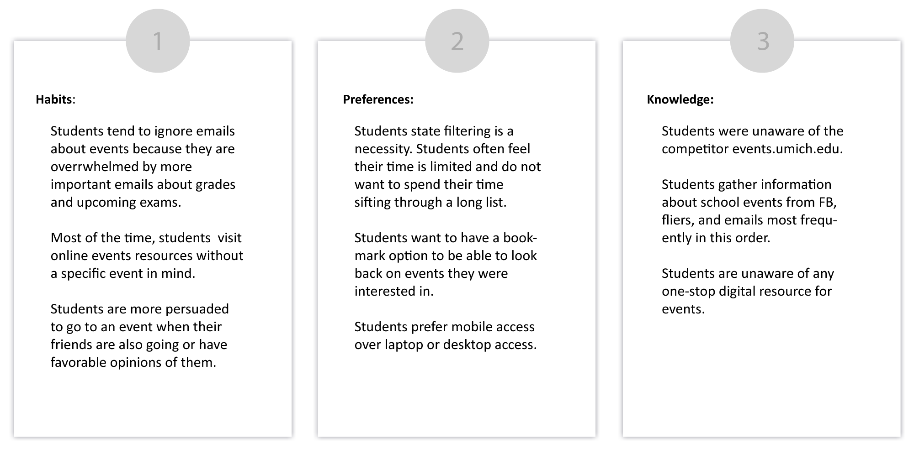
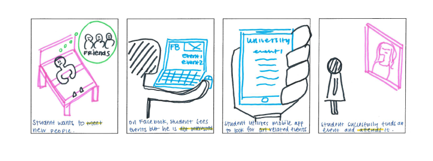
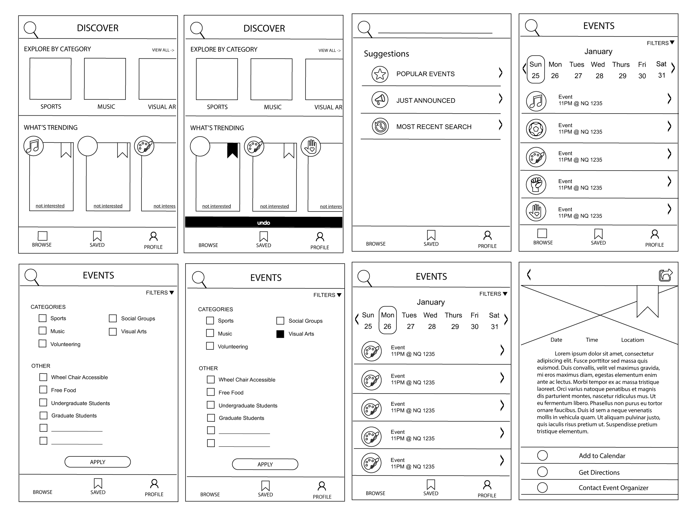
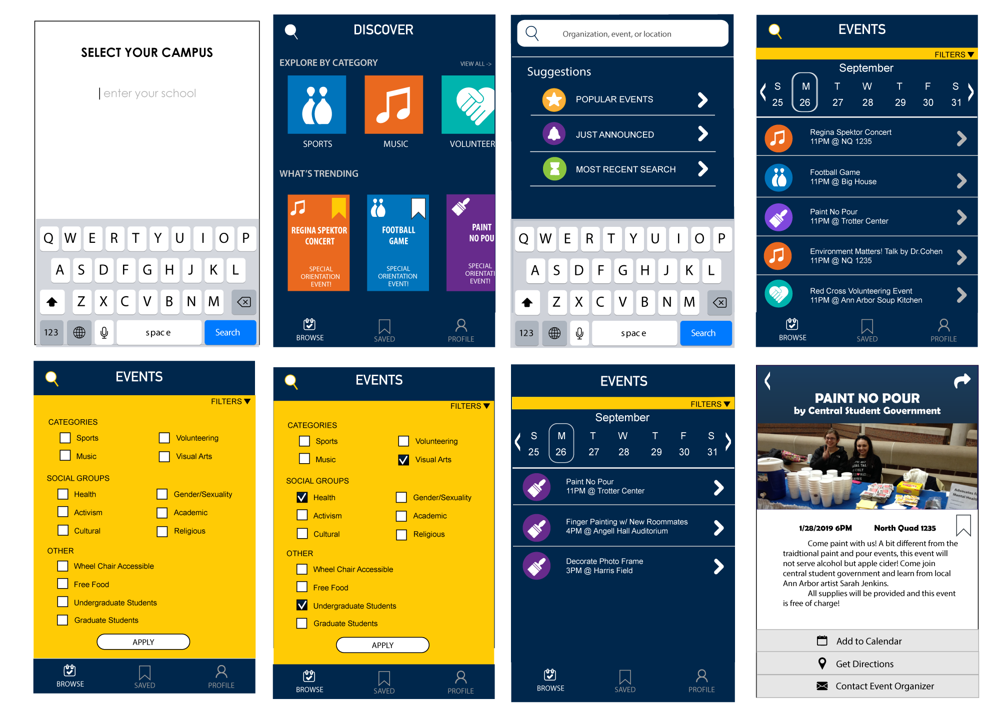

Phase 1: Understand
Essential Functions
Tool needs filtering option
Human/Social Processes
On-the-go, students do not always have access to a laptop or a desktop
Design Ethics
Functional, convenient, don’t contribute to alert fatigue
Micro Usability Test of Competitor

Competitor: https://events.umich.edu/ on mobile
Research Question:
Participants
Tasks
Follow Up Questions
Findings
Interview Potential Users
Interviewees
Findings

Storyboards


Consider Implications on Design
Mini-Personas
Freshman Student Julia:
“I want to attend events to meet new people with similar interests as mine”
Junior Student Jae Chan:
“Although I receive emails about events, I wish I had access to a separate resource for events related information.”
Graduate Student Quin:
“I want a one stop app that helps me not have to go back and forth between specific mobile apps while copying and pasting information”
Phase 2: Explore
Sketching
What I realized wouldn't work
Paper Prototyping
User Testing + Revisions #1
Tasks:
Findings
Low-Fidelity Wireframe

User Testing + Revision #2
Findings
"AHA!" Moment
Phase 03: Materialize
High Fidelity Mock-Up

Final User Testing
Findings
One user found search button option confusing